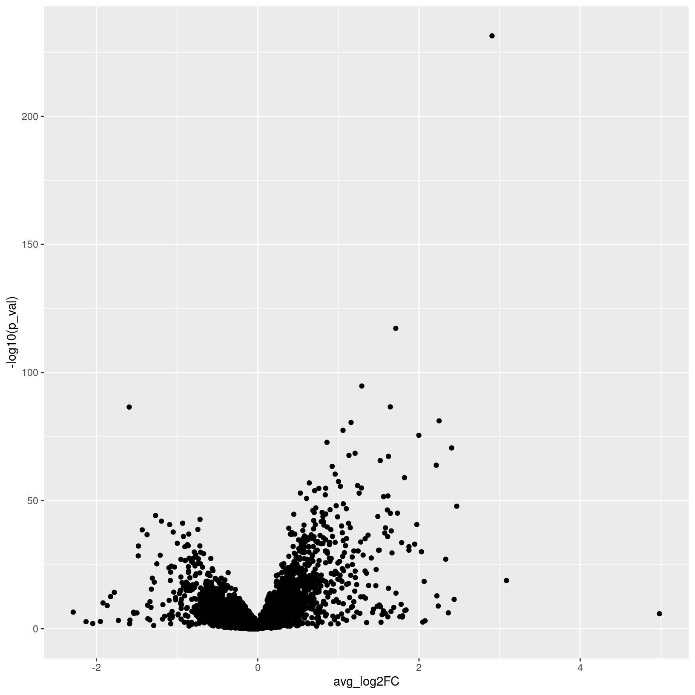

Introduction
Differential expression comparison is a key step to addressing the
biological question at hand for the experiment, namely what genes might
be contributing to the aberrant bone formation during healing that was
observed in this experiment.
|
|
A. For differential expression, we consider a single cluster at a time.
B. For the cluster of interest, the cells are partitioned into
case vs control (or other appropriate groupings) and expression compared
across all genes.
C. Comparisons produce lists and visualizations
of differently expressed genes across conditions.
|
As a reminder, our data includes cells isolated from issue from day 0
(prior to injury) as controls, and days 7 and 21 post-injury as
experimental conditions.

We already introduced DE comparisons in the marker identification section of this
workshop, but here we will show how to run comparisons between
experimental conditions for each annotated cluster.
Objectives
- Run cell-level differential expression comparisons
- Run sample level differential expression comparisons
Differential Expression
For single-cell data there are generally two types approaches for
running differential expression - either a cell-level or sample-level
approach.
For cell-level comparisons, simpler statistical methods like a t-test
or the Wilcoxon rank-sum test or single-cell specific methods that
models cells individually like MAST can be
used.
As mentioned earlier, many of the tools developed for bulk RNA-seq
have been shown to have good performance for single-cell data, such as
EdgeR or DESeq2, particularly when the count data is aggregated into
sample-level “pseudobulk” values for each cluster source.
As discussed in the single-cell
best practices book and in the Ouyang
Lab’s marker gene identification materials, there are active
benchmarking efforts and threshold considerations for single-cell
data.
Standard comparisons
First we’ll run cell-level comparisons for our data for the pericyte
cluster, starting with cells from the D21 vs D7 conditions. We’ll need
to ensure our cells are labeled to reflect both the cluster and
condition identities before running our comparison using
FindMarker() and summarizing the results:
# Compare pericyte cluster D21 v D7 ---------------------------------------
# set up combined label of day + celltype & assign as identities
geo_so$day.celltype = paste(geo_so$day, geo_so$cell_type, sep = '_')
# check labels
unique(geo_so$day.celltype)
[1] "Day0_Stem Cell" "Day0_Dendritic Cell" "Day0_Pericyte" "Day0_Macrophage"
[5] "Day0_Monocyte" "Day0_Hematopoietic Stem Cell" "Day0_CD8+ T Cell" "Day0_Muscle Satellite Cell"
[9] "Day0_Unknown" "Day0_Regulatory T Cell" "Day0_Muscle Progenitor Cell" "Day0_Hematopoetic precursor"
[13] "Day21_Hematopoietic Stem Cell" "Day21_Stem Cell" "Day21_Monocyte" "Day21_Pericyte"
[17] "Day21_Macrophage" "Day21_Muscle Satellite Cell" "Day21_Regulatory T Cell" "Day21_Dendritic Cell"
[21] "Day21_Unknown" "Day21_Muscle Progenitor Cell" "Day21_CD8+ T Cell" "Day21_Hematopoetic precursor"
[25] "Day7_Macrophage" "Day7_Monocyte" "Day7_Hematopoietic Stem Cell" "Day7_Pericyte"
[29] "Day7_Stem Cell" "Day7_Muscle Progenitor Cell" "Day7_CD8+ T Cell" "Day7_Regulatory T Cell"
[33] "Day7_Dendritic Cell" "Day7_Muscle Satellite Cell" "Day7_Unknown" "Day7_Hematopoetic precursor"
# Reset cell identities to the combined condition + cluster label
Idents(geo_so) = 'day.celltype'
# run comparison for D21 vs D0, using wilcoxon test
de_cell_pericyte_D21_vs_D7 = FindMarkers(
object = geo_so,
slot = 'data', test = 'wilcox',
ident.1 = 'Day21_Pericyte', ident.2 = 'Day7_Pericyte')
head(de_cell_pericyte_D21_vs_D7)
p_val avg_log2FC pct.1 pct.2 p_val_adj
Prelp 0.000000e+00 2.5221214 0.739 0.218 0.000000e+00
Fmod 0.000000e+00 2.3134918 0.872 0.470 0.000000e+00
Gm10076 0.000000e+00 -1.2106283 0.811 0.964 0.000000e+00
Tpt1 0.000000e+00 0.7932864 0.997 0.983 0.000000e+00
Cilp2 1.070023e-282 5.7574478 0.370 0.013 2.189909e-278
Wfdc1 1.079704e-277 5.7472348 0.349 0.008 2.209722e-273
# Add rownames as a column for output
de_cell_pericyte_D21_vs_D7$gene = rownames(de_cell_pericyte_D21_vs_D7)
# summarize our results
table(de_cell_pericyte_D21_vs_D7$p_val_adj < 0.05 & abs(de_cell_pericyte_D21_vs_D7$avg_log2FC) > 1.5)
FALSE TRUE
9209 520
write_csv(de_cell_pericyte_D21_vs_D7, file = 'results/tables/de_standard_pericyte_D21_vs_D7.csv')
In the first 3 lines of the above code block we can see the changes
to the schematic:

Image: Schematic after setting the
Idents().
Note - the avg_log2FC threshold of 1.5 we use here are
quite stringent as the default log2FC threshold for the function is
0.25. However the default threshold corresponds to only a 19% difference
in RNA levels, which is quite permissive.
If there is enough time - we can also compare between cells from the
D7 and D0 conditions.
# Compare pericyte cluster D7 v D0 ----------------------------------------
de_cell_pericyte_D7_vs_D0 = FindMarkers(
object = geo_so,
slot = 'data', test = 'wilcox',
ident.1 = 'Day7_Pericyte', ident.2 = 'Day0_Pericyte')
head(de_cell_pericyte_D7_vs_D0)
p_val avg_log2FC pct.1 pct.2 p_val_adj
Chad 2.647097e-216 -9.582188 0.002 0.319 5.417549e-212
Vit 5.129542e-208 -6.306605 0.007 0.412 1.049812e-203
C7 6.987318e-205 -9.272483 0.002 0.311 1.430024e-200
Myoc 6.923596e-189 -7.914476 0.005 0.353 1.416983e-184
Cilp2 5.532521e-183 -7.225177 0.013 0.445 1.132286e-178
Ptx4 1.801157e-177 -6.682222 0.004 0.319 3.686248e-173
# Add rownames as a column for output
de_cell_pericyte_D7_vs_D0$gene = rownames(de_cell_pericyte_D7_vs_D0)
# summarize results
table(de_cell_pericyte_D7_vs_D0$p_val_adj < 0.05 & abs(de_cell_pericyte_D7_vs_D0$avg_log2FC) > 1.5)
FALSE TRUE
10335 1141
This same approach can be extended to run pairwise comparisons
between conditions for each annotated cluster of interest.
Pseudobulk comparisons
With advances in the technology as well as decreased sequencing costs
allowing for larger scale single-cell experiments (that include
replicates), along with a study by Squair et al
(2021) that highlighted the possibility of inflated false discovery
rates for the cell-level approaches since cells isolated from the same
sample are unlikely to be statistically independent source
the use of sample-level or “psuedobulk” can be advantageous.
We’ll run psuedobulk comparisons for our data for the monocyte
cluster, starting with the D21 vs D0 conditions. We’ll need to generate
the aggregated counts first (ensuring that we are grouping cells by
replicate labels), before labeling the cells to reflect the cluster and
condition. Then we will run our comparison using
FindMarker() but specifying DESeq2 as our method before
summarizing the results:
# Create pseudobulk object -------------------------------------------------
pseudo_catch_so = AggregateExpression(geo_so, assays = 'RNA', return.seurat = TRUE, group.by = c('cell_type', 'day', 'replicate'))
# Set up labels to use for comparisons & assign as cell identities
pseudo_catch_so$day.celltype = paste(pseudo_catch_so$day, pseudo_catch_so$cell_type, sep = '_')
Idents(pseudo_catch_so) = 'day.celltype'
# Run pseudobulk comparison between Day 21 and Day 0, using DESeq2
de_pseudo_pericyte_D21_vs_D7 = FindMarkers(
object = pseudo_catch_so,
ident.1 = 'Day21_Pericyte', ident.2 = 'Day7_Pericyte',
test.use = 'DESeq2')
# Take a look at the table
head(de_pseudo_pericyte_D21_vs_D7)
p_val avg_log2FC pct.1 pct.2 p_val_adj
Cilp2 3.126004e-224 2.802487 1 1 8.280473e-220
Cd55 1.165071e-123 1.232658 1 1 3.086157e-119
Ltbp4 3.095745e-115 1.732792 1 1 8.200318e-111
Prelp 1.681209e-99 2.353650 1 1 4.453353e-95
Lbp 2.050068e-94 1.863180 1 1 5.430426e-90
Prss23 5.529743e-92 1.600028 1 1 1.464774e-87
# Add rownames as a column for output
de_pseudo_pericyte_D21_vs_D7$gene = rownames(de_pseudo_pericyte_D21_vs_D7)
# look at results, using the same thresholds
table(de_pseudo_pericyte_D21_vs_D7$p_val_adj < 0.05 & abs(de_pseudo_pericyte_D21_vs_D7$avg_log2FC) > 1.5)
FALSE TRUE
23827 52
# output results
write_csv(de_pseudo_pericyte_D21_vs_D7, file = 'results/tables/de_pseudo_pericyte_D21_vs_D7.csv')
Since we’re working with pseudobulk data, unlike in the marker
identification section, there is no percentage of cells expressing to
need to represent so we can summarize our DE results with a volcano
plot:
# Make a volcano plot of pseudobulk diffex results ------------------------
pseudo_pericyte_D21_vs_D7_volcano = ggplot(de_pseudo_pericyte_D21_vs_D7, aes(x = avg_log2FC, y = -log10(p_val))) + geom_point()
pseudo_pericyte_D21_vs_D7_volcano

ggsave(filename = 'results/figures/volcano_de_pseudo_pericyte_D21_vs_D0.png', plot = pseudo_pericyte_D21_vs_D7_volcano, width = 7, height = 7, units = 'in')
Further examining DE results
We can also overlay the expression of interesting differentially
expressed genes back onto our UMAP plots to highlight the localization
and possible function, again using the FeaturePlot
function.
# UMAP feature plot of Cd55 gene ------------------------------------------
FeaturePlot(geo_so, features = "Cd55", split.by = "day")
 So we found Cd55 based on differential expression comparison in the
Pericyte population between Day 7 and Day 21 but in looking at the
Feature plot of expression, we also see high expression in a subset of
cells on Day 0. This interesting, since according to Shin
et al (2019), CD55 regulates bone mass in mice.
So we found Cd55 based on differential expression comparison in the
Pericyte population between Day 7 and Day 21 but in looking at the
Feature plot of expression, we also see high expression in a subset of
cells on Day 0. This interesting, since according to Shin
et al (2019), CD55 regulates bone mass in mice.
It also looks like there is a high percentage of expression in a
subpopulation of the other two precursor/stem cell populations on the
top right of our plots, which is interesting and might suggest an
interesting subpopulation that we might try to identify, particularly
given the role of this gene and our interest in determining why abberant
bone can form after injury.
Next steps
While looking at individual genes can reveal interesting patterns
like in the case of Cd55, it’s not a very efficient process. So after
running ‘standard’ and/or psuedobulk differential expression
comparisons, we can use the same types of tools used downstream of bulk
RNA-seq to interpret these results, such as GO term enrichment, KEGG
pathway enrichment, and GSEA with mSigDB.
